2. 本文中使用的工具
在本文中，我们将使用以下工具：
- Java 1.5 JDK
- TOMCAT Web 服务器（http://tomcat.apache.org/），
- ECLIPSE 开发环境（http://www.eclipse.org/）及 WTP（Web Tools Package）插件
- 一个 Web 浏览器（IE、Netscape、Mozilla Firefox、Opera 等）。
这些都是免费工具。通常，Web 开发中可以使用许多开源工具：
http://www.borland.com/jbuilder/foundation/index.html | ||
http://struts.apache.org/ | ||
http://www.mysql.com/ | ||
http://tomcat.apache.org/ | ||
http://www.netscape.com/ | ||
2.1. J ava 1.5
Tomcat 5.x Servlet 容器需要 Java 1.5 虚拟机。因此，您必须首先安装此版本的 Java，该版本可在 Sun 网站上找到，网址为 [http://www.sun.com] -> [http://java.sun.com/j2se/1.5.0/download.jsp]（2006 年 5 月）：

步骤 2：
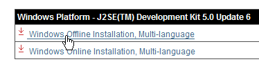
步骤 3：
从下载的文件中运行 JDK 1.5 安装程序。
2.2. Tomcat 5 Servlet 容器
要运行 Servlet，我们需要一个 Servlet 容器。这里我们介绍其中之一——Tomcat 5.x，可从 http://tomcat.apache.org/ 下载。我们将概述其安装步骤（2006 年 5 月版）。如果系统中已安装了 Tomcat 的旧版本，最好先将其卸载。

要下载该产品，请点击上方的 [Tomcat 5.x] 链接：
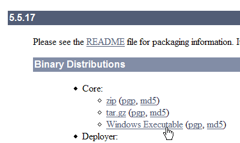
您可以下载适用于 Windows 平台的 .exe 文件。下载完成后，开始 Tomcat 安装：
点击 [下一步] ->

接受许可条款 ->
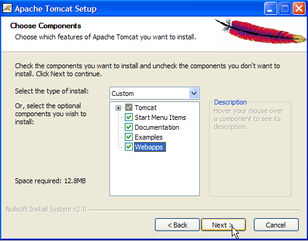
点击 [下一步] ->

接受建议的安装目录，或使用 [浏览] 进行更改 ->

设置 Tomcat 服务器管理员的登录名和密码。此处我们使用 [admin / admin] ->

Tomcat 5.x 需要 JRE 1.5。通常情况下，它会自动检测到您机器上已安装的 JRE。上文中指定的路径是第 2.1 节中下载的 JRE 1.5 的路径。如果未找到 JRE，请使用 [1] 按钮指定其根目录。完成此操作后，请点击 [安装] 按钮安装 Tomcat 5.x ->

点击 [完成] 按钮即可完成安装。Windows 任务栏右侧会出现一个图标，表示 Tomcat 已安装：

右键单击此图标可访问“启动”和“停止”服务器命令：

现在，我们使用 [停止服务] 选项来停止 Web 服务器：

请注意图标状态的变化。该图标可从任务栏中移除：

Tomcat 已安装在用户选择的文件夹中，我们将其称为 <tomcat>。下载的 Tomcat 5.5.17 版本的目录结构如下：

Tomcat 安装程序已在 [开始] 菜单中添加了多个快捷方式。我们使用下方的 [监视] 链接来启动 Tomcat 停止/启动工具：

随后，我们将看到之前展示的图标：
双击此图标即可启动 Tomcat 监控程序：

通过 [启动 - 停止 - 暂停] - 重启 按钮，我们可以启动、停止和重启服务器。点击 [启动] 即可启动服务器，随后使用浏览器输入 URL http://localhost:8080。此时应会看到类似以下内容的页面：

您可以点击以下链接，验证 Tomcat 是否已正确安装：

[http://localhost:8080] 页面上的所有链接都值得探索，建议读者亲自尝试。我们稍后将有机会重新访问这些用于管理服务器上部署的 Web 应用程序的链接：

2.3. 在 Tomcat 服务器上部署 Web 应用程序
阅读 [ref1]：第 1 章，第 2 章：2.3.1、2.3.2、2.3.3
2.3.1. 部署
Web 应用程序必须遵循某些规则才能部署在 Servlet 容器中。设 <webapp> 为 Web 应用程序的目录。一个 Web 应用程序由以下部分组成：
位于 <webapp>\WEB-INF\classes 文件夹中的 | |
位于 <webapp>\WEB-INF\lib 文件夹中 | |
位于 <webapp> 文件夹或其子文件夹中 |
该 Web 应用程序通过 XML 文件进行配置：<webapp>\WEB-INF\web.xml。
让我们构建一个具有以下目录结构的 Web 应用程序：

我们将使用 Windows 资源管理器创建上述目录结构。此处的 [classes] 和 [lib] 文件夹为空。 [views] 文件夹中包含一个静态 HTML 文件：

其内容如下：
<html>
<head>
<title>Application exemple</title>
</head>
<body>
Application exemple active ....
</body>
</html>
如果您在浏览器中加载此文件，将看到以下页面：

浏览器显示的 URL 表明该页面并非由 Web 服务器提供，而是由浏览器直接加载的。现在，我们希望通过 Tomcat Web 服务器提供该页面。
让我们回到 <tomcat> 目录树：
部署在 Tomcat 服务器上的 Web 应用程序通过位于 [<tomcat>\conf\Catalina\localhost] 文件夹中的 XML 文件进行配置：
 |  |
由于这些 XML 文件的结构简单，可以手动创建。但我们不会采用这种方法，而是使用 Tomcat 提供的 Web 工具。
2.3.2. Tomcat 管理
在登录页面 http://localhost:8080 上，服务器提供了用于管理的链接：

[Tomcat 管理] 链接允许我们配置 Tomcat 向其内部部署的 Web 应用程序提供的资源，例如数据库连接池。让我们点击该链接：

显示的页面提示，管理 Tomcat 5.x 需要一个名为“admin”的特定软件包。让我们返回 Tomcat 网站：

现在下载标有 [Web Application Administration] 的 zip 文件，然后将其解压。其内容如下：

必须将 [admin] 文件夹复制到 [<tomcat>\server\webapps] 目录下，其中 <tomcat> 是 Tomcat 5.x 的安装目录：

[localhost] 文件夹中包含一个 [admin.xml] 文件，必须将其复制到 [<tomcat>\conf\Catalina\localhost]：

如果 Tomcat 正在运行，请先停止它，然后重新启动。随后，使用浏览器再次访问 Web 服务器的登录页面：

点击 [Tomcat 管理] 链接。您将看到登录页面：
注意：实际上，为了显示下图所示的页面，我首先必须手动输入 URL [http://localhost:8080/admin/index.jsp]。只有这样，上方的 [Tomcat 管理] 链接才能生效。我不确定这是否是我操作上的失误。
 |  |
在此处，您必须重新输入在 Tomcat 安装过程中提供的信息。在本例中，我们输入用户名和密码为 admin / admin。点击 [登录] 按钮后，将跳转至以下页面：

此页面允许 Tomcat 管理员定义
- 数据源、
- 发送电子邮件所需的信息（邮件会话），
- 所有应用程序均可访问的环境数据（环境条目），
- 管理 Tomcat 用户和管理员（用户），
- 管理用户组（Groups），
- 定义角色（即用户可以做什么和不能做什么），
- 定义由服务器部署的 Web 应用程序的特性（Catalina 服务）
让我们点击上方的 [角色] 链接：

角色允许您定义用户或用户组可以或不可以做什么。某些权限与角色相关联。每个用户都与一个或多个角色相关联，并拥有与其相关的权限。下面的 [manager] 角色授予管理部署在 Tomcat 中的 Web 应用程序的权限（部署、启动、关闭、卸载）。 我们将创建一个 [manager] 用户，并将其与 [manager] 角色关联，以便其管理 Tomcat 应用程序。为此，我们点击管理页面上的 [Users] 链接：

我们可以看到已有若干用户。我们使用 [创建新用户] 选项来创建新用户：

我们将用户名设为 manager，密码设为 manager，并为其分配 manager 角色。点击 [保存] 按钮确认此操作。新用户将出现在用户列表中：

该新用户将被添加到文件 [<tomcat>\conf\tomcat-users.xml] 中：

其内容如下：
- 第 10 行：已创建的 [manager] 用户
另一种添加用户的方法是直接编辑此文件。例如，如果您忘记了 admin 或 manager 账户的密码，请按照以下步骤操作。
2.3.3. 管理已部署的 Web 应用程序
现在让我们返回登录页面 [http://localhost:8080]，并点击 [Tomcat Manager] 链接：

这将打开一个身份验证页面。我们使用 manager / manager 登录，即使用我们刚刚创建的具有 [manager] 角色的用户。实际上，只有具有此角色的用户才能使用此链接。在 [tomcat-users.xml] 的第 11 行，我们可以看到用户 [admin] 也具有 [manager] 角色。因此，我们也可以使用 [admin / admin] 的凭据。

随后将跳转至一个页面，列出了当前部署在 Tomcat 中的应用程序：

我们可以使用页面底部的表单添加一个新应用程序：

在此，我们希望将之前构建的示例应用程序部署到 Tomcat 中。具体操作如下：

/example | 用于标识待部署 Web 应用程序的名称 | |
C:\data\2005-2006\eclipse\dvp-eclipse-tomcat\example | Web 应用程序文件夹 |
要获取文件 [C:\data\2005-2006\eclipse\dvp-eclipse-tomcat\example\views\example.html]，我们将向 Tomcat 请求 URL [http://localhost:8080/exemple/vues/exemple.html]。因此，上下文用于命名已部署 Web 应用程序目录树的根目录。 我们使用 [部署] 按钮来部署应用程序。如果一切顺利，我们将看到以下响应页面：

新应用程序将出现在已部署应用程序列表中：
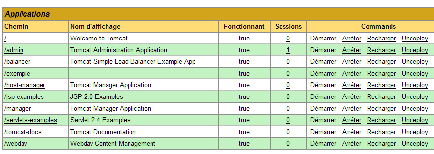
现在，让我们将上方的 /example 上下文行注释掉：
链接至 http://localhost:8080/exemple | |
允许您启动应用程序 | |
允许您停止应用程序 | |
允许您重新加载应用程序。例如，当您在应用程序中添加、修改或删除了某些类时，此操作是必要的。 | |
将移除 [/example] 上下文。该应用程序将从可用应用程序列表中消失。 |
现在我们的 /example 应用程序已部署完成，我们可以进行一些测试。我们通过 URL [http://localhost:8080/exemple/vues/exemple.html] 请求 [example.html] 页面：

在 Tomcat 服务器上部署 Web 应用程序的另一种方法是，将通过 Web 界面输入的信息写入位于 [<tomcat>\conf\Catalina\localhost] 文件夹中的 [context].xml 文件中，其中 [context] 是 Web 应用程序的名称。
让我们回到 Tomcat 管理界面：
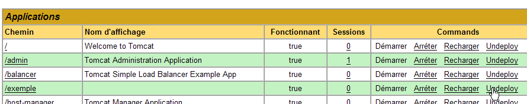
现在，我们通过 [Undeploy] 链接移除 [/example] 应用程序：

[/example] 应用程序已不再出现在活动应用程序列表中。现在，让我们定义以下 [example.xml] 文件：
该 XML 文件由一个 <Context> 标签组成，其 docBase 属性定义了要部署的 Web 应用程序所在的文件夹。我们将此文件放置在 <tomcat>\conf\Catalina\localhost 目录下：

如有必要，请停止并重启 Tomcat，然后使用 Tomcat 管理器查看活动应用程序列表：

[/example] 应用程序确实存在。让我们在浏览器中访问该 URL：
[http://localhost:8080/exemple/vues/exemple.html]:
以这种方式部署的 Web 应用程序可以像之前一样，通过 [Undeploy] 链接从已部署应用程序列表中移除：

此时，[example.xml] 文件将自动从 [<tomcat>\conf\Catalina\localhost] 文件夹中移除。
最后，要在 Tomcat 中部署 Web 应用程序，您还可以在 [<tomcat>\conf\server.xml] 文件中定义其上下文。本文将不对此进行详细说明。
2.3.4. 带有主页的 Web 应用程序
当我们请求 URL [http://localhost:8080/exemple/] 时，会得到以下响应：

这种行为取决于 Tomcat 的配置。在以前的版本中，我们会看到应用程序物理目录 [/example] 中的内容。值得庆幸的是，Tomcat 现在默认已阻止了这种情况。
我们可以进行配置，使得在请求该上下文时显示所谓的“主页”。为此，我们需要创建一个 [web.xml] 文件，并将其放置在 <example>\WEB-INF 文件夹中，其中 <example> 是 Web 应用程序的物理文件夹 [/example]。该文件内容如下：
- 第 2–5 行：根 <web-app> 标签，其属性是从 Tomcat [/admin] 应用程序的 [web.xml] 文件（<tomcat>/server/webapps/admin/WEB-INF/web.xml）中复制并粘贴而来的。
- 第 7 行：Web 应用程序的显示名称。这是一个可自由选择的名称，其限制比应用程序上下文名称更少。例如，它可以包含空格，而上下文名称则不允许。该名称会在 Tomcat 管理界面等处显示：

- 第 8 行：Web 应用程序的描述。该文本随后可通过编程方式检索。
- 第 9–11 行：欢迎文件列表。<welcome-file-list> 标签用于定义当客户端请求应用程序上下文时要呈现的视图列表。可以有多个视图。 系统会向客户端呈现第一个找到的视图。此处仅有一个：[/views/example.html]。因此，当客户端请求 URL [/example] 时，实际返回的 URL 将是 [/example/views/example.html]。
我们将此 [web.xml] 文件保存到 <example>\WEB-INF 目录下：

如果 Tomcat 仍在运行，您可以通过 [Reload] 链接强制其重新加载 [/example] Web 应用程序：

在此“重新加载”操作期间，如果 [<example>\WEB-INF] 目录中存在 [web.xml] 文件，Tomcat 会重新读取该文件。本例中即属于这种情况。如果 Tomcat 已停止运行，请重新启动它。
使用浏览器访问 URL [http://localhost:8080/exemple/]：

主机文件机制已生效。
2.4. 安装 Eclipse
Eclipse 是一个多语言开发环境。它在 Java 开发中被广泛使用。它是一个可通过添加称为插件的工具来扩展的工具。插件数量庞大，这正是 Eclipse 如此强大的原因。
Eclipse 可通过以下网址获取：[http://www.eclipse.org/downloads/]：
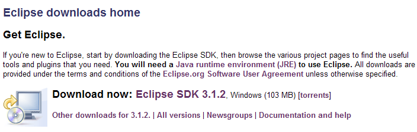
我们希望使用 Eclipse 进行 Java Web 开发。为此目的，有许多插件可供使用。它们有助于验证 JSP 页面、XML 文件等的语法，并允许您在 Eclipse 内测试 Web 应用程序。我们将使用其中一个名为 Web Tools Package (WTP) 的插件。安装 Eclipse 的标准步骤如下：
- 安装 Eclipse
- 安装所需的插件
WTP 插件本身需要其他插件支持，这使得其安装过程相当复杂。因此，Eclipse 官网提供了一个包含 Eclipse 开发平台、WTP 插件及其所需所有其他插件的安装包。该安装包可在 Eclipse 官网（2006 年 5 月）的以下网址获取：[http://download.eclipse.org/webtools/downloads/]：

请点击上面的链接 [1.0.2]：
我们通过上述链接下载 [wtp] 软件包。生成的 zip 文件包含以下内容：


只需将这些内容解压到一个文件夹中。此后我们将该文件夹称为 <eclipse>。其内容如下：

[eclipse.exe] 是可执行文件，[eclipse.ini] 是其配置文件。让我们来看看后者的内容：
在启动 Eclipse 时，请按以下方式使用这些参数：
您可以通过创建一个使用这些参数启动 Eclipse 的快捷方式，来获得与 .ini 文件相同的效果。下面我们来解释这些参数：
- -vmargs：表示后续参数是针对运行 Eclipse 的 Java 虚拟机（JVM）设置的。事实上，Eclipse 是一个 Java 应用程序。
- -Xms40m: ?
- -Xmx256m：设置分配给运行 Eclipse 的 Java 虚拟机 (JVM) 的内存大小（单位为 MB）。默认情况下，该大小为 256 MB，如图所示。如果系统允许，建议设置为 512 MB。
这些参数将传递给运行 Eclipse 的 JVM。JVM 由 [java.exe] 或 [javaw.exe] 文件表示。该文件位于何处？实际上，它可以通过多种方式定位：
- 操作系统 PATH 环境变量中
- 位于 <JAVA_HOME>/jre/bin 文件夹中，其中 JAVA_HOME 是定义 JDK 根目录的系统变量。
- 通过以 -vm <路径>\javaw.exe 形式作为参数传递给 Eclipse 的位置
最后一种方案更为可取，因为前两种方案容易受到后续应用程序安装的影响，这些安装可能会更改操作系统 PATH 或 JAVA_HOME 变量。
因此，我们创建以下快捷方式：

<eclipse>\eclipse.exe -vm "C:\Program Files\Java\jre1.5.0_06\bin\javaw.exe" -vmargs -Xms40m -Xmx512m | |
Eclipse 安装目录 |
完成上述操作后，使用此快捷方式启动 Eclipse。您将看到一个初始对话框：

[工作区] 即工作区。我们接受提供的默认值。默认情况下，Eclipse 项目将创建在此对话框中指定的 <工作区> 文件夹内。有一种方法可以覆盖此行为。这正是我们将系统地进行的操作。因此，在此对话框中给出的响应并不重要。
完成此步骤后，将显示 Eclipse 开发环境：

我们按照上述建议关闭 [欢迎] 视图：

在创建 Java 项目之前，我们将配置 Eclipse 以指定用于编译 Java 项目的 JDK。为此，我们选择 [窗口 / 首选项 / Java / 已安装的 JRE] 选项：
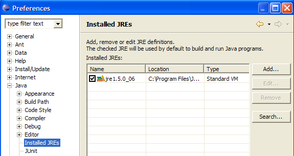
通常，用于启动 Eclipse 本身的 JRE（Java 运行时环境）应出现在 JRE 列表中。这通常是列表中唯一的一个。 您可以通过 [添加] 按钮添加 JRE。随后必须指定 JRE 的根目录。[搜索] 按钮将启动对磁盘上 JRE 的搜索。这是跟踪已安装 JRE 的好方法，以免在升级到新版本时忘记卸载。上图中，被选中的 JRE 就是将用于编译和运行 Java 项目的那个。
本示例中使用的 JRE 是第 2.1 节中安装的那个，它也是用于启动 Eclipse 的 JRE。双击它可打开其属性：

现在，让我们创建一个 Java 项目 [文件 / 新建 / 项目]：
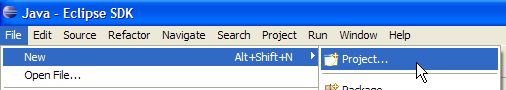 |  |
选择 [Java 项目]，然后 [下一步] ->

在 [2] 中，我们指定一个空文件夹作为 Java 项目的安装位置。在 [1] 中，我们为项目命名。项目名称不必与文件夹名称一致，尽管上文示例可能暗示了这一点。完成上述操作后，点击 [完成] 按钮即可结束创建向导。这相当于接受向导后续页面中提供的默认值。
现在我们已获得一个 Java 项目骨架：

右键单击 [test1] 项目以创建一个 Java 类：


- 在 [1] 中，选择将创建该类的文件夹。默认情况下，Eclipse 会建议使用当前项目文件夹。
- 在 [2] 中，指定该类所属的包
- 在 [3] 中，输入类名
- 在 [4] 中，我们请求生成静态方法 [main]
点击 [完成] 确认向导。随后，项目中将生成一个类：

Eclipse 已生成类骨架。双击上方的 [Test1.java] 即可访问：

我们将上述代码修改如下：
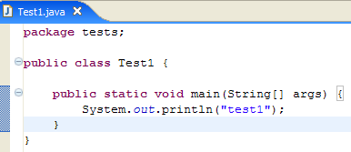
运行 [Test1.java] 程序：[右键单击 Test1.java -> 运行作为 -> Java 应用程序]

执行结果显示在 [控制台] 窗口中：

2.5. Tomcat 与 Eclipse 的集成
若要在 Eclipse 环境中直接使用 Tomcat，我们需要在 Eclipse 配置中声明该服务器。为此，我们选择 [文件 / 新建 / 其他] 选项。随后将看到以下向导：

我们选择创建新服务器。点击上方的 [服务器] 图标，然后点击 [下一步]：
添加服务器后，Eclipse 项目资源管理器中会出现一个文件夹：
要在 Eclipse 中管理 Tomcat，请通过 [窗口 -> 显示视图 -> 其他 -> 服务器] 选项打开名为 [服务器] 的视图：


点击 [确定]。随后将显示 [服务器] 视图：
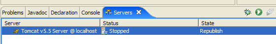
所有已注册的服务器都会显示在此视图中，本例中即为我们刚刚注册的 Tomcat 5.5 服务器。右键单击该服务器即可访问用于启动、停止和重启服务器的命令：

上图中，我们正在启动服务器。服务器启动时，[控制台]视图中会写入多条日志：
理解这些日志需要一些时间来适应。我们暂时不深入探讨它们。但是，重要的是要确认这些日志中没有出现任何上下文加载错误。实际上，在启动时，Tomcat/Eclipse 服务器会尝试加载其管理的应用程序的上下文。加载应用程序的上下文涉及处理其 [web.xml] 文件，并加载一个或多个用于初始化该上下文的类。可能会发生以下几种错误：
- [web.xml] 文件存在语法错误。这是最常见的错误。建议在创建 XML 文档时使用能够对其进行验证的工具。
- 某些待加载的类未被找到。系统会在 [WEB-INF/classes] 和 [WEB-INF/lib] 目录中搜索这些类。通常应验证必要类是否存在，并检查 [web.xml] 文件中声明的类名拼写是否正确。
从 Eclipse 启动的服务器配置与第 2.2 节（第 5 页）中安装的配置不一致。要验证这一点，请使用浏览器访问 URL [http://localhost:8080]：

此响应并不表示服务器无法运行，而是表明所请求的资源 / 不可用。当 Tomcat 服务器集成到 Eclipse 中时，这些资源将作为 Web 项目存在。我们稍后会看到这一点。现在，让我们停止 Tomcat：

可以更改之前的运行模式。让我们返回 [Servers] 视图，双击 Tomcat 服务器以访问其属性：
 |  |
复选框 [1] 负责控制上述行为。当选中时，在 Eclipse 中开发的 Web 应用程序不会在关联的 Tomcat 服务器的配置文件中声明，而是放在单独的配置文件中。因此，Tomcat 服务器内的默认应用程序——[admin] 和 [manager]（这两个非常有用的应用程序）将不可用。因此，让我们取消选中 [1] 并重启 Tomcat：
 |  |
完成上述操作后，请使用浏览器访问 URL [http://localhost:8080]：
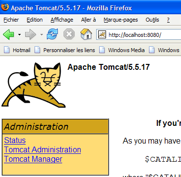
在之前的示例中，我们使用了 Eclipse 外部的浏览器。您也可以在 Eclipse 内部使用浏览器：

上图中，我们选择了内置浏览器。若要在 Eclipse 中启动它，可使用以下图标：

实际启动的浏览器将是通过 [窗口 -> Web 浏览器] 选项所选定的浏览器。在此，我们将获得内置浏览器：

如有需要，请从 Eclipse 中启动 Tomcat，并在 [1] 中输入 URL [http://localhost:8080]：

点击 [Tomcat Manager] 链接：

系统将提示您输入访问 [manager] 应用程序所需的 [用户名/密码]。根据我们之前设置的 Tomcat 配置，您可以输入 [admin/admin] 或 [manager/manager]。随后，您将看到已部署应用程序的列表：

我们可以看到之前创建的 [person] 应用程序。其关联的 [重新加载] 链接在后续操作中会派上用场。